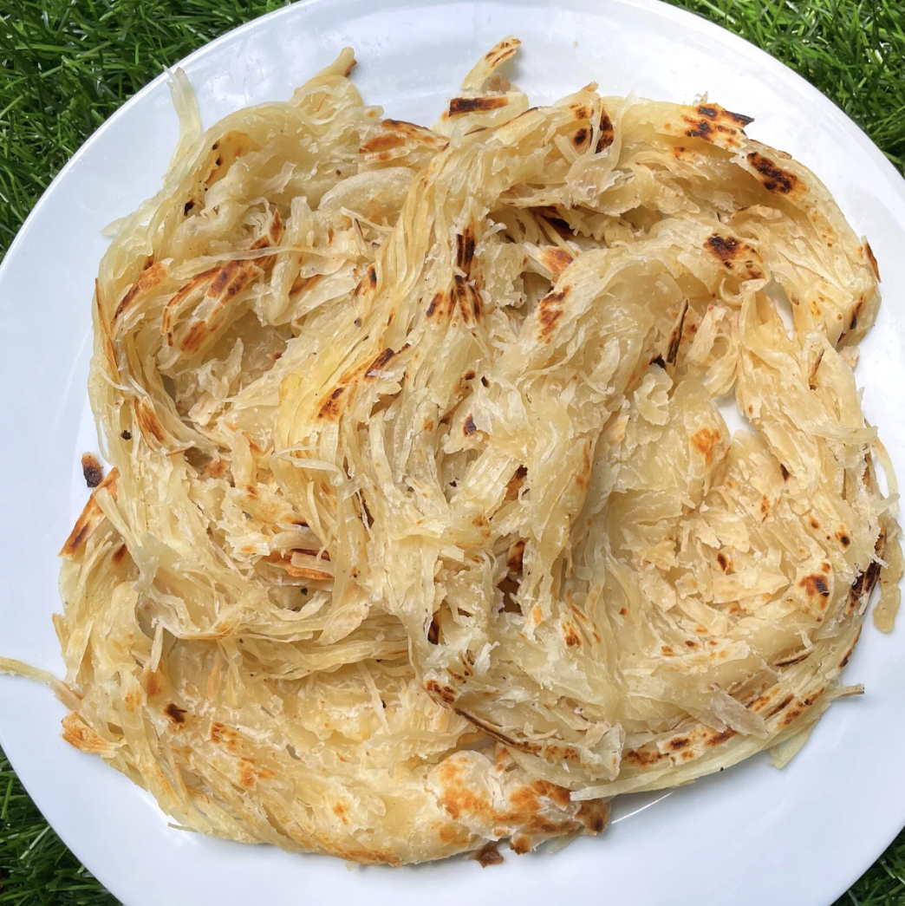

Nool Parotta

Description
Nool parotta, is a beloved South Indian layered flatbread made from a simple dough of maida, salt, water, and ghee. What sets it apart is the meticulous technique behind it, the dough is rolled paper-thin, cut into fine, string-like threads, then gathered and coiled before being flattened and cooked. This process creates hundreds of delicate layers that separate into soft, flaky strands the moment you crush the parotta after cooking. Crispy on the outside and irresistibly soft and stringy on the inside, nool parotta is best served hot.
Ingredients
- 3 cups All purpose flour
- 2 teaspoon Salt
- 1 tablespoon Sugar
- 1 cup Warm Milk
- 2 tablespoon Oil
Steps
- Take warm milk, sugar, salt and 2 tablespoon oil in a bowl. Mix well. Add in flour and start mixing with a spoon and then knead for 10 mins.
- Apply 1 teaspoon oil over the dough and cover with a damp towel. Leave the dough to rest for 4 to 6 hours.
- Now divide the dough into 6 to 8 equal balls. Shape the portions into smooth balls. Cover again and let the dough ball rest for 10 mins.
- Take one portion of dough on a work surface. Don't apply oil on the work surface, else you won't get a grip. Take your rolling pin and roll the dough into a thin sheet like. Apply oil over the sheets.
- Now use a cutter to roll over the sheets back and forth to create thin strips.
- Now use a bench scraper or knife and scrape the cut threads to one long rope like. Roll it on to itself. Apply oil on top and let it rest for 30 mins to 1 hour.
- Now take a paratha and flatten it with hands or rolling pin. Make it slightly thin.
- Heat a dosa tawa. Place paratha on the hot tawa. Cook for few seconds on one side. Flip over, apply oil over paratha. Flip over and cook on both sides till light golden.
- Remove and crush the paratha with both hands while it is still hot.
- Serve hot with beef fry.
Home